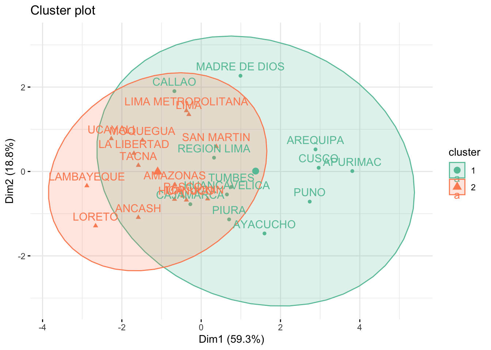

Análisis de conglomerados

FACULTAD DE CIENCIAS SOCIALES - PUCP
Curso: POL 304 - Estadística para el análisis político 2 | Semestre 2023 - 2
Jefas de Práctica: Karina Alcántara üë©‚Äçüè´ y Lizette Crisp√≠n üë©‚Äçüè´
Cluster jerárquico
Paso 1. Preparación de variables
Vamos a usar una base que tiene diferentes indicadores relacionados a desigualdad de género, utilizaremos desde MLautonomia hasta Cuenta F
DesigualdadGenero: Indice de desigualdad de género
MLAutonomia: Mide que tanto el sistema legal protege derechos reporductivos de las mujeres
MLViolencia: Mide que tanto el sistema legal protege a las mujeres de la violencia
VozPolítica: Presencia de mujeres en el parlamento
LibertadMov: Porcentaje de mujeres que declaran no sentirse seguras en las calles
DesconfianzaSJ: Porcentaje de mujeres que no confian en el sistema de justicia
SecundariaC: Porcentaje de población con secundaria completa
DesempleoMuj: Ratio de desempleo de muejeres frente a hombres
CuentaF: Porcentaje de mujeres que cuentan con una cuenta en el sistema financiero
Vamos a preparar la base
rownames(data) <- data[,1]
#Asignamos las filas (casos) de acuerdo a la primera columna que era paíseslibrary(dplyr)
data1 <- select(data, -Pais, -DesigualdadGenero)
#Mencionamos que queremos todas las variables menos la 1 (que es país) y 2 (que es el indicador general)
data1<-na.omit(data1)Exploramos la clasificación de todas las variables
## MLAutonomia MLViolencia VozPolitica LibertadMov
## Min. :0.0000 Min. :0.2500 Min. : 0.0 Min. :29.70
## 1st Qu.:0.0000 1st Qu.:0.5000 1st Qu.:16.0 1st Qu.:58.20
## Median :0.2500 Median :0.7500 Median :22.1 Median :65.40
## Mean :0.3698 Mean :0.5702 Mean :24.0 Mean :63.56
## 3rd Qu.:0.7500 3rd Qu.:0.7500 3rd Qu.:32.5 3rd Qu.:70.20
## Max. :1.0000 Max. :0.7500 Max. :61.3 Max. :91.10
## DesconfianzaSJ SecundariaC DesempleoMuj CuentaF
## Min. :23.20 Min. : 1.74 Min. :0.500 Min. : 1.67
## 1st Qu.:47.40 1st Qu.: 36.73 1st Qu.:0.930 1st Qu.: 32.91
## Median :52.30 Median : 61.51 Median :1.170 Median : 53.70
## Mean :51.49 Mean : 60.65 Mean :1.237 Mean : 57.54
## 3rd Qu.:57.50 3rd Qu.: 89.18 3rd Qu.:1.480 3rd Qu.: 87.11
## Max. :65.50 Max. :100.00 Max. :2.330 Max. :100.00Paso 2. Cálculo de matriz distancias
library(factoextra)
library(ggplot2)
m.distancia <- get_dist(data1, method = "euclidean", stand = TRUE)Vemos la matriz de distancia
Paso 3. Calculo de clúster
library(NbClust)
resnumclust=NbClust(data1, distance = "euclidean", min.nc= 2, max.nc= 10,
method = "ward.D")## *** : The Hubert index is a graphical method of determining the number of clusters.
## In the plot of Hubert index, we seek a significant knee that corresponds to a
## significant increase of the value of the measure i.e the significant peak in Hubert
## index second differences plot.
## ## *** : The D index is a graphical method of determining the number of clusters.
## In the plot of D index, we seek a significant knee (the significant peak in Dindex
## second differences plot) that corresponds to a significant increase of the value of
## the measure.
##
## *******************************************************************
## * Among all indices:
## * 6 proposed 2 as the best number of clusters
## * 6 proposed 3 as the best number of clusters
## * 7 proposed 4 as the best number of clusters
## * 1 proposed 6 as the best number of clusters
## * 2 proposed 10 as the best number of clusters
##
## ***** Conclusion *****
##
## * According to the majority rule, the best number of clusters is 4
##
##
## *******************************************************************Paso 4. Observamos el dendograma
#Aca especificamos el número de clusters que deseamos
res1 <- hcut(data1, k = 4, stand = TRUE, hc_method = "ward.D")
#Ward: se va agrupando de acuerdo a las menores distanciasDendograma
#comando de gráfico
#rect= agregar rectangulo punteado
#cex=Tamaño del titulo
fviz_dend(res1, rect = T, cex = 0.5)Gráficamos los clusters
Paso 5. Ver características de los grupos
##
## 1 2 3 4
## 30 27 35 29library(dplyr)
clust_car<-data1 %>%
mutate(Cluster = res1$cluster) %>%
group_by(Cluster) %>%
summarise_all("mean")
clust_car## # A tibble: 4 × 9
## Cluster MLAutonomia MLViolencia VozPolitica LibertadMov DesconfianzaSJ
## <int> <dbl> <dbl> <dbl> <dbl> <dbl>
## 1 1 0.708 0.658 15.3 53.6 44.2
## 2 2 0.0278 0.352 27.5 66.8 50.5
## 3 3 0.55 0.514 28.4 66.0 55.8
## 4 4 0.121 0.75 24.5 68.0 54.7
## # ℹ 3 more variables: SecundariaC <dbl>, DesempleoMuj <dbl>, CuentaF <dbl>Cluster NO jerárquico
Base de datos: Indicadores de ENDES 2019
Variables que se usarán son de indicadores ENDES 2019 relacionados a violencia física contra la mujer y sus hijas/os
Haremos un indicador sobre violencia física contra la mujer.
psico-esp: VIOLENCIA PSICOLÓGICA EJERCIDA ALGUNA VEZ POR EL ESPOSO O COMPAÑERO
fisica-esp: VIOLENCIA FÍSICA EJERCIDA ALGUNA VEZ POR EL ESPOSO O COMPAÑERO
sexual-esp: VIOLENCIA SEXUAL EJERCIDA ALGUNA VEZ POR EL ESPOSO O COMPAÑERO
fisica-otros: VIOLENCIA FÍSICA EJERCIDA ALGUNA VEZ POR OTRA PERSONA, APARTE DE SU ACTUAL/ÚLTIMO ESPOSO
con-alcohol:Esposo / Compañero toma o tomaba bebidas alcohólicas algunas veces o con frecuencia
golpes-hija GOLPES O CASTIGOS FÍSICOS EJERCIDOS POR EL PADRE BIOLÓGICO A SUS HIJAS E HIJOS
fisica-preshija: MUJERES DE 15 A 49 AÑOS DE EDAD QUE DECLARARON LA PRESENCIA DE SUS HIJAS/OS DE 1 A 5 AÑOS DE EDAD CUANDO SU ESPOSO O COMPAÑERO LA MALTRATABA FISICAMENTE
sexual-preshija MUJERES DE 15 A 49 AÑOS DE EDAD QUE DECLARARON LA PRESENCIA DE SUS HIJAS/OS DE 1 A 5 AÑOS DE EDAD CUANDO SU ESPOSO O COMPAÑERO LA MALTRATABA SEXUALMENTE
vio-hijamadre: MUJERES DE 15 A 49 AÑOS DE EDAD QUE DECLARARON QUE SU PAPÁ GOLPEÓ ALGUNA VEZ A SU MAMÁ
Cargamos paquetes
Cargamos data
## [1] "REGION" "psico-esp" "fisica-esp" "sexual-esp"
## [5] "fisica-otros" "golpes-hija" "fisica-preshija" "sexual-preshija"
## [9] "vio-hijamadre" "con-alcohol"Preparamos variables y vamos a hacer lo mismo que el ejercicio anterior.
rownames(data) = data[,1]
#Asignamos los nombres de acuerdo a la primera columna que es regiones, el 1 es de acuerdo a la posiciónEliminamos la variable región porque ya tenemos las etiquetas
## 'data.frame': 27 obs. of 9 variables:
## $ psico-esp : num 50.7 48.6 68 58.7 52.3 ...
## $ fisica-esp : num 28.3 27 41.8 37.9 39.9 ...
## $ sexual-esp : num 7.83 5.76 14.34 10.6 8.35 ...
## $ fisica-otros : num 10.75 6.79 15.31 22.18 12.27 ...
## $ golpes-hija : num 35 25.9 38.4 13.5 38.4 ...
## $ fisica-preshija: num 23.8 31.5 33.6 45.4 32.9 ...
## $ sexual-preshija: num 6.12 3.63 3.12 5.2 1.41 ...
## $ vio-hijamadre : num 36.5 35.9 54.3 43.5 46.3 ...
## $ con-alcohol : num 5.54 5.59 6.88 8.56 8.52 ...¿Qué variables seleccionamos?
library(dplyr)
data1=select(data, "psico-esp","fisica-esp","sexual-esp", "fisica-otros","con-alcohol")En este caso como tenemos indicadores en la escala de % del 0 al 100, no necesitamos estandarizar
Paso 1. Calculamos distancias y elaboramos matriz de distancias
Calculamos distancias
Elaboramos matriz de distancias
Paso 2. Estimar el número de clústers
Especificar que el metodo es kmeans
resnumclust<-NbClust(data1, distance = "euclidean", min.nc=2, max.nc=10, method = "kmeans", index = "alllong")## *** : The Hubert index is a graphical method of determining the number of clusters.
## In the plot of Hubert index, we seek a significant knee that corresponds to a
## significant increase of the value of the measure i.e the significant peak in Hubert
## index second differences plot.
## ## *** : The D index is a graphical method of determining the number of clusters.
## In the plot of D index, we seek a significant knee (the significant peak in Dindex
## second differences plot) that corresponds to a significant increase of the value of
## the measure.
##
## *******************************************************************
## * Among all indices:
## * 7 proposed 2 as the best number of clusters
## * 6 proposed 3 as the best number of clusters
## * 4 proposed 6 as the best number of clusters
## * 4 proposed 7 as the best number of clusters
## * 3 proposed 9 as the best number of clusters
## * 3 proposed 10 as the best number of clusters
##
## ***** Conclusion *****
##
## * According to the majority rule, the best number of clusters is 2
##
##
## *******************************************************************- ¿Qué nos sugiere el gráfico?
- ¿Cuántos clúster podemos hacer?
- ¿Cuál es la segunda opción?
Paso 3. Calculamos los clústers con el método de k-means
Paso 4. Graficamos clústers
Graficamos clústers

## AMAZONAS ANCASH APURIMAC AREQUIPA
## 2 2 1 1
## AYACUCHO CAJAMARCA CALLAO CUSCO
## 1 1 1 1
## HUANCAVELICA HUANUCO ICA JUNIN
## 1 2 2 2
## LA LIBERTAD LAMBAYEQUE LIMA LIMA METROPOLITANA
## 2 2 2 2
## REGION LIMA LORETO MADRE DE DIOS MOQUEGUA
## 1 2 1 2
## PASCO PIURA PUNO SAN MARTIN
## 2 1 1 2
## TACNA TUMBES UCAYALI
## 2 1 2Paso 5. Ver características de los grupos
Agregamos a la base de datos
## psico-esp fisica-esp sexual-esp fisica-otros con-alcohol cluster
## AMAZONAS 50.67401 28.33569 7.825505 10.745830 5.539800 2
## ANCASH 48.58894 26.99176 5.755162 6.786679 5.594532 2
## APURIMAC 68.04245 41.78400 14.340372 15.305285 6.881544 1
## AREQUIPA 58.65568 37.93574 10.598720 22.176043 8.562342 1
## AYACUCHO 52.33838 39.92452 8.348963 12.266426 8.520534 1
## CAJAMARCA 58.11619 27.82115 7.968603 8.040995 5.772940 1## [1] "psico-esp" "fisica-esp" "sexual-esp" "fisica-otros" "con-alcohol"
## [6] "cluster"Observamos características
## # A tibble: 2 × 7
## Cluster `psico-esp` `fisica-esp` `sexual-esp` `fisica-otros` `con-alcohol`
## <int> <dbl> <dbl> <dbl> <dbl> <dbl>
## 1 1 58.6 34.8 8.91 15.6 6.94
## 2 2 47.6 27.9 5.98 13.2 5.79
## # ℹ 1 more variable: cluster <dbl>¿Cómo podemos determinar las categorías de ambos conglomerados?
Los valores de abajo tienden a ser más altos en cuanto a violencia física
2=Nivel bajo de violencia física hacia la mujer
1=Nivel alto de violencia física hacia la mujer
##
## Alto Bajo
## 12 15Extra: Limpieza
Como comentábamos en la PD anterior, la información que usarán para sus trabajos no suele estar formateada o “limpia”. Por ello acá les comparto un par de códigos que me consultaron ayer para que puedan limpiar su BD. Ojo que para la mayoría de técnicas del curso necesitamos una data sin NA ni valores inválidos, como lo son los 99 que usualmente se colocan cuando es una pregunta sin responder (por ejemplo en las encuestas).
Mediante el uso de la función summary puedo ver que tengo datos vacíos en la columna saneamiento (3) y vivienda (1). Asimismo, tengo valores máximos de 99 lo cual correspondería, según el diccionario de datos, que son datos inconclusos. Dado lo último, tengo que retirar los 99 de mi base de datos.
## REGION saneamento vivienda internet
## Length:27 Min. :37.80 Min. :19.54 Min. : 3.281
## Class :character 1st Qu.:47.65 1st Qu.:27.33 1st Qu.: 5.968
## Mode :character Median :52.46 Median :31.82 Median : 6.790
## Mean :54.13 Mean :36.32 Mean :10.518
## 3rd Qu.:58.04 3rd Qu.:37.44 3rd Qu.: 8.162
## Max. :99.00 Max. :99.00 Max. :99.000
## NA's :3 NA's :1Eliminación NA
Eliminación de SOLO las filas que contienen NA en una data frame. Es decir el nro de casos se disminuye.
Si apreciamos el summary, se han eliminado las NA.
## REGION saneamento vivienda internet
## Length:23 Min. :37.80 Min. :19.54 Min. : 3.281
## Class :character 1st Qu.:47.31 1st Qu.:27.13 1st Qu.: 5.639
## Mode :character Median :52.38 Median :28.87 Median : 6.627
## Mean :54.03 Mean :36.54 Mean :10.936
## 3rd Qu.:58.06 3rd Qu.:36.95 3rd Qu.: 8.023
## Max. :99.00 Max. :99.00 Max. :99.000Eliminación de 99
Eliminación de 99 (u otro valor que deseen eliminar) y NA en una data frame. Esto aplica a todas las filas que contienen 99 y NA. Es decir el nro de casos se disminuye.
## REGION saneamento vivienda internet
## Length:19 Min. :37.80 Min. :19.54 Min. : 3.281
## Class :character 1st Qu.:45.89 1st Qu.:26.89 1st Qu.: 5.431
## Mode :character Median :50.68 Median :28.34 Median : 6.450
## Mean :51.18 Mean :30.20 Mean : 6.998
## 3rd Qu.:55.25 3rd Qu.:34.31 3rd Qu.: 8.023
## Max. :68.04 Max. :41.78 Max. :14.340Espero les pueda servir para la limpieza de sus DF.